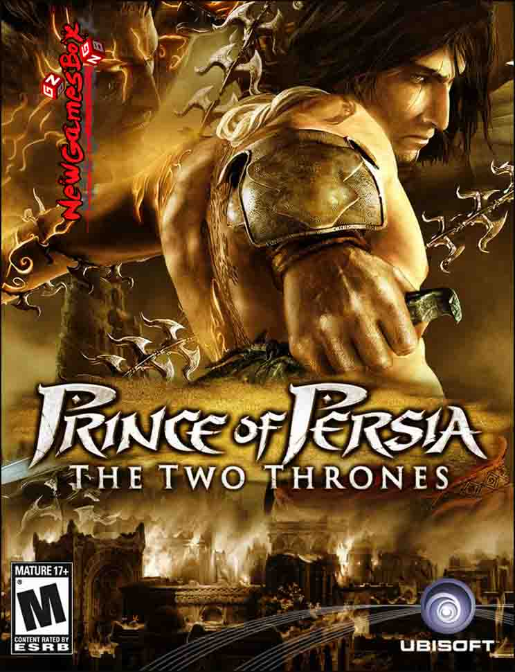

PRINCE OF PERSIA THE TWO THRONES
PRINCE OF PERSIA THE TWO THRONES Game Overview
It Is An Good Action And Adventure Game. Ubisoft Montreal Was The Developer Of This Game. The Publisher Of This Game Was Ubisoft. 7 December 2005 Was The Release Date For This Game. The Combat Is Still The Same As It Was In The Second Game. The Combos And Weapons All Still Apply To The Same Formula. Which Changes Once We Play As The Dark Prince. The Two Thrones Is A Great Conclusion To The Great Sands Of Time Trilogy. The Two Thrones Is Place After Warrior Within. With The Prince Returning To Babylon On His Ship With Kaileena. In The Time That He Was Go From Babylon. The City Has Been Ravage By War And The Prince Finds Himself In The Midst Of It. Game Sounds Along With Graphics Are Good. For This You May Get Prince Of Persia The Two Thrones Free Download PC Game.
Weapons In This Prince Of Persia The Two Thrones Free Download PC Game Was Great. The Time Altering Events At The End Of The First Game. The Vizier Is Still Alive And Is On A War Path. After Some Events, The Prince Finds Himself Assisting And With The Assistance Of A Familiar Face, Farrah. Just Like The First Game, Although She Has No Recollection Of You Due To The Timeline Correction. Farrah Works With The Prince To Hunt Down The Vizier Before He Destroys The City. The Two Thrones Plays Just Like The Prior Two Games. The Acrobatic Elements Are Great In This Game. The Roles In This Game Was Great To Play. You Have To Show Your Skills As Long As Possible In This Game. The Levels Are Well Design In This Game. With An Epic Scope As Far As How Massive The Rooms Can Get.
System Requirements of PRINCE OF PERSIA THE TWO THRONES
Before You Start PRINCE OF PERSIA THE TWO THRONES Download Free. Make Sure Your PC Meets Minimum System Requirements.
Recommended System Requirements
Operating System: Windows XP, Windows 7, Windows 8 and 8.1
CPU: Pentium III
RAM: 512 MB
Hard Disk Space: 1GB
PRINCE OF PERSIA THE TWO THRONES Free Download
Click On The Below Button To Start PRINCE OF PERSIA THE TWO THRONES Free Download. It Is Full And Complete Game. Just Download And Start Playing It.
We Have Provided Direct Link Full Setup Of The Game.